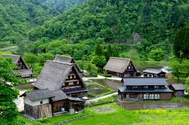
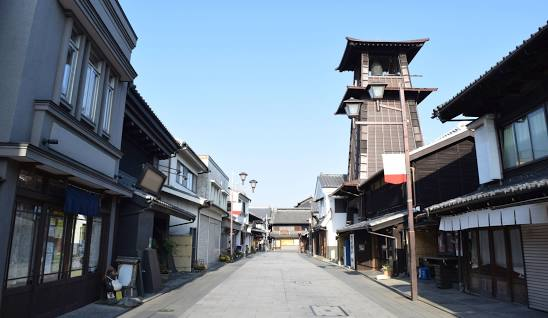

Pedesaan Jepang yang Terkenal
Jepang memiliki banyak wilayah perdesaan yang terkenal karena keindahan alamnya, budayanya, atau tradisinya.Pedesaan Jepang sering kali dikelilingi oleh keindahan alam seperti gunung, hutan, sungai, dan perkebunan. Kita dapat menikmati pemandangan seperti pegunungan yang hijau, sawah yang luas, dan hutan-hutan yang indah. Beberapa di antaranya termasuk:
Shirakawa-go dan Gokayama

Terletak di Prefektur Gifu, wilayah ini terkenal karena rumah-rumah tradisional Gassho-zukuri yang unik. Desa-desa ini terdaftar sebagai Situs Warisan Dunia UNESCO.
Kawagoe

Juga dikenal sebagai "Kota Little Edo," Kawagoe terletak di Prefektur Saitama dan memiliki suasana yang mengingatkan pada zaman Edo (1603-1868), dengan bangunan-bangunan bersejarah dan jalan-jalan berbatu
Bukit Yoshino

Terletak di Prefektur Nara, Yoshino adalah tempat perayaan sakura (bunga ceri) yang sangat terkenal. Pada musim semi, bukit ini dipenuhi dengan bunga sakura yang mekar.
Wilayah-wilayah perdesaan ini menawarkan pengalaman budaya, sejarah, dan alam yang luar biasa di Jepang, yang bisa menjadi tujuan yang menarik bagi wisatawan yang ingin menjauh dari keramaian kota besar.